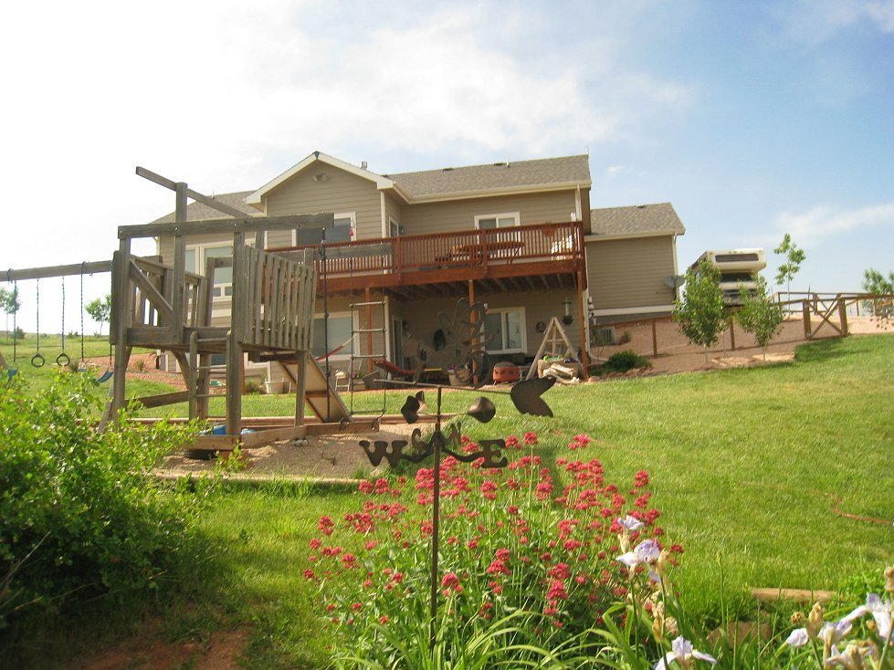

The Gauthiers

Tim's Jazz
Pius X Class of '76
/fa7sbu0i/2zu8pf22 /pr749r76 /ret5ikiv
...
Powered by Cincopa
Video Streaming Hosting
solution.
Test
Test
bike
Bob downtown
cameramake
SAMSUNG
height
960
orientation
1
width
1280
originaldate
5/25/2014 1:33:10 AM
cameramodel
SCH-U460
fish
Shelley at Dowdy
cameramake
Canon
height
480
flash
16
orientation
1
width
640
originaldate
6/16/2014 6:46:39 PM
cameramodel
Canon PowerShot SD87
piano
Justin tuning
cameramake
Apple
height
1936
flash
32
dir
:
40
alt
:
1514
lat
:
40.553847
long
:
-105.045608
camerasoftware
7.1.1
originaldate
5/9/2014 5:06:16 PM
width
2592
orientation
1
cameramodel
iPad Air